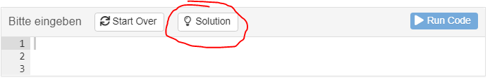
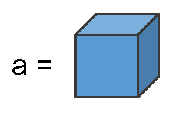
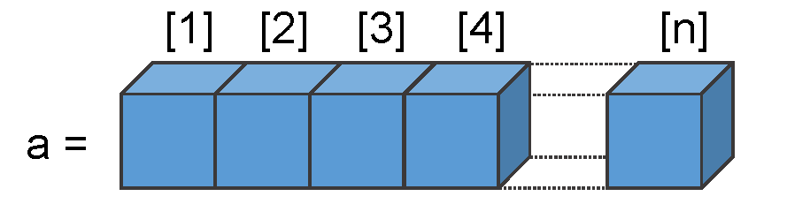
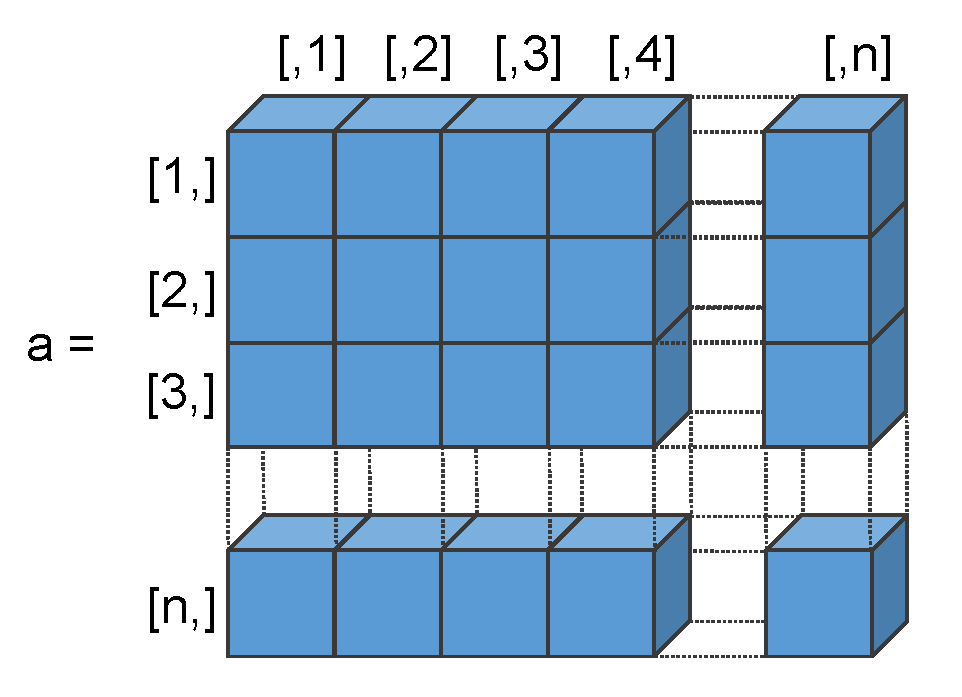
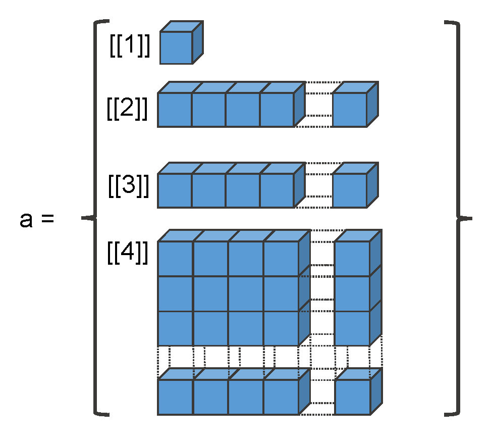
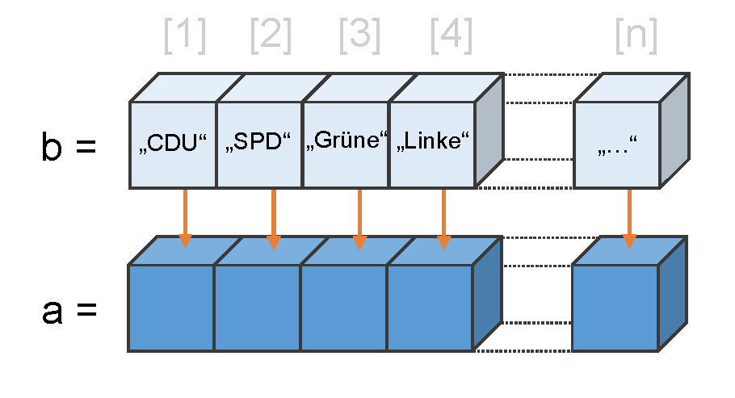
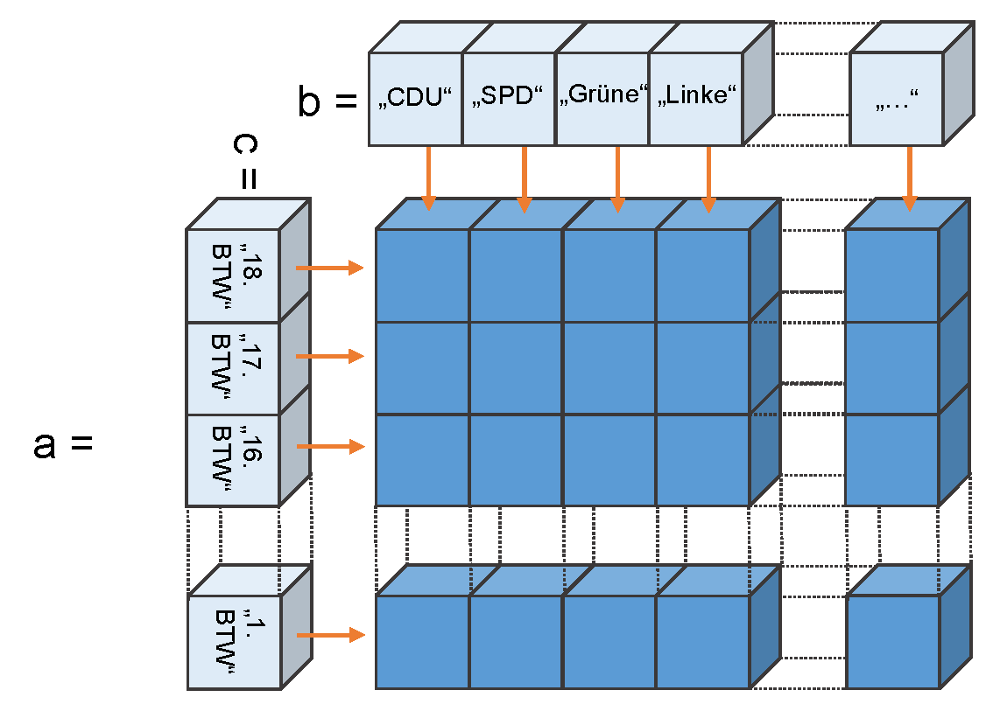

Zum Einstieg in die heutige Sitzung gibt es dieses interaktive Tutorial1, dass die Inhalte der letzten Woche wiederholt.
Manchmal müssen Sie selbst den Code eingeben und ausführen, manchmal steht schon etwas drin, dass Sie ausführen sollen um sich den Output anzuschauen. Wenn Sie mal nicht weiter wissen, dann gibt es dort, wo Sie selbst überlegen müssen, immer auch einen Button, der Ihnen die Lösung anzeigt, oder zumindest einen Hinweis zeigt (Button Hint oder Solution).

Letzte Woche haben wir grundlegende Datenstrukturen kennengelernt: Skalar, Vektor, Matrix und Liste. Diese Datenstrukturen können Elemente der drei Basistypen numeric, charakter oder logical enthalten.


Erstellen Sie einen beliebigen Vektor der Länge 3.Hinweis: Denken Sie an den Zuwesieungspfeil und die c() Funktion. Vektoren und Matrizen dürfen immer nur Elemente des gleichen Typs enthalten.

Erstellen Sie zwei Vektoren mit 3 Elementen und fügen Sie sie reihenweise zu einer Matrix zusammen:Hinweis: Die Funktion rbind() fügt die Vektoren reihenweise zusammen, die Funktion cbind() spaltenweise. Beide Vektoren müssen aber den gleichen Datentyp beinhalten und die gleiche Länge aufweisen.

Listen dürfen unterschiedliche Datenstrukturen mit unterschiedlichen Datenypen beinhalten. Ich habe Ihnen hier ein Listenobjekt angelegt: wahlen
Bitte rufen Sie das Objekt mal auf.
wahlen <- list()
wahlen[[1]] <- c("Bundestagswahl", "Landtagswahl", "Kommunalwahl")
wahlen[[2]] <- rbind(c(rep("Angela Merkel", 3)),
c("Frank-Walter Steinmeier", "Peer Steinbrück", "Martin Schulz"))
wahlen[[3]] <- rbind(c(27.3, 34.1, 26.8),
c( 23.0, 25.7, 20.5))
dimnames(wahlen[[3]])[[1]]<- c("CDU", "SPD")
dimnames(wahlen[[3]])[[2]]<- c("2009","2013", "2017")wahlenSie können jetzt eines der Listenelemente indizieren. Speichern Sie bitte aus der Liste das Element mit den Wahlergebnissen als neuen Vektor:
Hinweis: Listen indiziert man mit der doppelten eckigen Klammer [[]].
ergebnisse <- wahlen[[3]]
ergebnisseOft snd Listen groß und komplex. Sich die Liste anzeigen zu lassen, indem man das Objekt aufruft, ist daher oft unpraktisch. Listen (aber auch alle anderen Objekte ) lassen sich gut der Funktion str() in ihrer Struktur erkunden. Sie sehen also, aus was für Elementen die Liste besteht. Versuchen Sie es mal mit der Liste wahlen und schauen Sie sich den Output an. Vergleichen Sie bitte den Output mit dem von oben - wie werden die Datenstrukturen aus der Liste als str() dargestellt?
str(wahlen)Wir haben Vektoren mit der der Funktion c() erstellt und verlängert. Und wir haben Vektoren mit cbind und rbind zum Typ Matrix zusammengefügt.
Die folgende Tabelle enthält die Bundestagswahlergebnisse der CDU (ohne CSU) und der SPD für die Wahlen ab 1990.
| Partei | 1990 | 1994 | 1998 | 2002 | 2005 | 2009 | 2013 | 2017 |
|---|---|---|---|---|---|---|---|---|
| CDU | 36.7 | 34.2 | 28.4 | 29.5 | 27.8 | 27.3 | 34.1 | 26.8 |
| SPD | 33.5 | 36.4 | 40.9 | 38.5 | 34.2 | 23.0 | 25.7 | 20.5 |
Erstellen Sie je ein neues Objekt SPD und CDU, die jeweils die Wahlergebnisse enhalten.
SPD <- c(33.5, 36.4, 40.9, 38.5, 34.2, 23.0, 25.7, 20.5)
CDU <- c(36.7, 34.2, 28.4, 29.5, 27.8, 27.3, 34.1, 26.8)SPD
CDUOder einfache Funktionen mit den Vektoren nutzen:
length(CDU)
mean(SPD)
max(CDU)
min(SPD)Ode Vergleiche durchführen… Erstellen Sie doch mal eine neue Variable (Objekt/Vektor) mit Namen cdu.gewinnt, der die Information enthält, ob die CDU bei einer Wahl über der SPD lag:
cdu.gewinnt <- CDU > SPD
cdu.gewinntOder man kann die Vektoren für weitere Berechnungen heranziehen. Zum Beispiel lässt sich die Differenz zwischen den Wahlergebnissen berechnen:
btw.diff <- CDU - SPD
btw.diffDas neue Objekt btw.diff enthält also für jede Wahl, um wie viele Prozentpunkte die CDU über der SPD lag (weil CDU minus SPD).
names() beschriftenMit der Funktion names() lassen sich diese Vektoren auch beschriften.


Hier macht es zum Beispiel Sinn, die Jahreszahl als Beschriftung zu nutzen:
SPD <- c(33.5, 36.4, 40.9, 38.5, 34.2, 23.0, 25.7, 20.5)
CDU <- c(36.7, 34.2, 28.4, 29.5, 27.8, 27.3, 34.1, 26.8)names(CDU) <- c(1990, 1994, 1998, 2002, 2005, 2009, 2013, 2017)
CDUOder wir erstellen ein Objekt jahre und nutzen dieses zur Beschriftung:
jahre <- c(1990, 1994, 1998, 2002, 2005, 2009, 2013, 2017)
names(SPD) <- jahre
SPDWenn wir jetzt Funktionen wie which(), min(), oder max() auf diese Vektoren anwenden, dann bekommen wir nicht nur ausgegeben, das wievielte Element die Bedingung erfüllt, sondern auch, die dazugehörige Beschriftung. Um präziser zu sein: nicht nur das n-te Element, sondern auch das n-te Element aus dem names()-Vektor des Objektes.
Versuchen Sie doch mal, für das Objekt SPD mit der which()-Funktion herauszufinden, in welchem Jahr die SPD das schlechteste Wahlergebnis erhalten hat:
SPD <- c(33.5, 36.4, 40.9, 38.5, 34.2, 23.0, 25.7, 20.5)
CDU <- c(36.7, 34.2, 28.4, 29.5, 27.8, 27.3, 34.1, 26.8)
jahre <- c(1990, 1994, 1998, 2002, 2005, 2009, 2013, 2017)
names(CDU) <- jahre
names(SPD) <- jahrewhich(SPD==min(SPD))Und jetzt bitte, in welchem Jahr die SPD ein Ergebnis hatte, das über oder gleich dem Ergebnis der CDU lag:
which(SPD >= CDU)Oder nutzen Sie zusätzlich die mean()-Funktion um zu prüfen, in welchen Jahren d SPD überdruchschnittlich
Wir haben schon einige Funktionen kennengerlernt…
Hier sind einige Funktionen die wir genutzt haben, um mit Objekten zu arbeiten:
| Funktionsaufruf | Was die Funktion ausgibt |
|---|---|
| length(object) | Number of elements/components. |
| dim(object) | Dimensions of an object. |
| str(object) | Structure of an object. |
| names(object) | Names of components in an object. |
| c(object, object,…) | Combines objects into a vector. |
| cbind(object, object, …) | Combines objects as columns. |
| rbind(object, object, …) | Combines objects as rows. |
| head(object) | Lists the first part of the object. |
| tail(object) | Lists the last part of the object. |
Dann gab es einige mathematische, bzw. statistische Funktionen:
| Funktionsaufruf | Was die Funktion ausgibt |
|---|---|
| abs(object) | Absolute Werte (Betrag) |
| sqrt(object) | Quadratwurzel |
| log(object) | Logarithmus |
| sum(object) | Summe der Elemente eines Objektes |
| cumsum(object) | Kummulierte Summe |
| mean(object) | Arithmetisches Mittel |
| sd(object) | Standardabweichung |
| table(object) | Häufigkeitstabelle |
| prop.table(table(object)) | Tabelle mit relativen Häufigkeiten |
Und wir haben einige Operatoren kennengelernt, um Vergleiche vorzunehmen:
| Operator | Vergleich |
|---|---|
| < | Less than |
| <= | Less than or equal to |
| > | Greater than |
| >= | Greater than or equal to |
| == | Exactly equal to |
| != | Not equal to |
| !x | Not x |
| x | y | x or y |
| x & y | x and y |
| isTRUE(x) | Test if x is TRUE |
Diese Vergleichoperatoren sind vor allem beim Indizieren (also beim Subsetting von Objekten) wichtig. Damit beschäftigen wir uns jetzt im dritten Teil des Tutorials.
Um das Indizieren zu verstehen ist muss man wissen, dass beim Indizieren ausgewählt wird, was TRUE ist.
Rufen Sie mal Vektor a auf, den ich bereits vorbereitet habe:
a <- c(1:15)aWenn man nun idizieren möchte, dann kann man in der eckigen Klammer direkt angeben, das wievielte Element man haben möchte - oder auch mehrere, dann mit c():
a[5] # das 5. Element
a[c(2,4,6)] # das 2.,4. und 6. Element…oder Sie können eine Bedingung angeben, die erfüllt sein muss, z.B. hier >= 12.
Wenn Sie aber nur schreiben a >= 12, dann bekommen Sie nicht das Subset zurück, sondern einen Vektor, der genau so lang ist, wie Vektor a, der die Information enthält, ob a die Bedingugn >= 12 erfüllt (einen Vektor vom Typ logical, also mit TRUE oder FALSE).
a >= 12TRUE oder FALSE genutzt, um R mitzuteilen, welches Element aus dem Vektor ausgegeben werden soll:
welches.element <- a >= 12 #Erstellt den Velktor mit TRUE oder FALSE
a[welches.element] # Nutzt den TRUE/FALSE Vektor zum IndizierenEs geht aber auch direkt… Aber jetzt wissen Sie, warum a für die Bedingung auch nochmal in der eckigen Klammer gennant werden muss:
a[a >= 12]Dabei muss aber der logische Vektor gleich lang sein, wie der ursprüngliche Vektor.
Das gleiche gilt auch, wenn Sie für indizierte Objekte (Subsets eines Objektes) eine neue Zweisung vornehmen möchten:
Soll den Objekten, die durch Indizierung ausgewählt werden neue Werte zugewiesen werden, dann müssen auf beiden Seiten des Zuweisungspfeils
<-gleich viele Objekte vorhanden sein
Nehmen wir folgenden Vektor mit Regierungskoalitionen koalitionen:
koalitionen <- c("CDU/CSU und SPD", "CDU/CSU und FDP", "CDU/CSU und SPD")
names(koalitionen) <- c(2009, 2013, 2017)
koalitionenkoalitionen <- c("CDU und SPD", "CDU und FDP", "CDU/CSU und SPD")
names(koalitionen) <- c(2009, 2013, 2017)
koalitionenNehmen wir an, wir wollen nun auch für Element 1 und 2 die CSU dazuschreiben, indizieren wir also die ersten beiden Elemente:
Übrigens: Wir könnten auch Beschriftungen (also die names()) für die Indierung nutzen:
koalitionen[c(1,2)]
koalitionen[c("2009", "2013")]Diese ersten beiden Elemente wollen wir nun korrigieren und die CSU auch nennen. Dazu werden die ersten beiden Elemente durch den Zuweisungspfiel überschrieben:
koalitionen[c("2009", "2013")] <- c("CDU/CSU und SPD", "CDU/CSU und FDP")Bitte schauen Sie sich die folgende Tabelle an:
| party_name_short | 1990 | 1994 | 1998 | 2002 | 2005 | 2009 | 2013 | 2017 |
|---|---|---|---|---|---|---|---|---|
| B90/Gru | 3.8 | 7.3 | 6.7 | 8.6 | 8.1 | 10.7 | 8.4 | 8.9 |
| CDU | 36.7 | 34.2 | 28.4 | 29.5 | 27.8 | 27.3 | 34.1 | 26.8 |
| CSU | 7.1 | 7.3 | 6.7 | 9.0 | 7.4 | 6.5 | 7.4 | 6.2 |
| FDP | 11.1 | 6.9 | 6.2 | 7.4 | 9.8 | 14.6 | 4.8 | 10.7 |
| PDS|Li | 2.4 | 4.4 | 5.1 | 4.0 | 8.7 | 11.9 | 8.6 | 9.2 |
| SPD | 33.5 | 36.4 | 40.9 | 38.5 | 34.2 | 23.0 | 25.7 | 20.5 |
wahlen <- as.matrix(df[df$party_name_short %in% auswahl, c(2:9)])
dimnames(wahlen) <- NULLIch habe bereits für jede Partei einen Vektor erstellt und diese mit rbind() zu einer Matrix zusammengefügt. Sie können das Matrix-Objekt mit dem Namen wahlen aufrufen:
wahlenJetzt sind Sie dran: bitte beschriften Sie die Matrix mit Parteinamen und Jahreszahlen mithilfe der dimnames() Funktion. Die Funktion dimnames() muss für die Zeilenbeschriftung mit dimnames()[[1]] <- ... und für die Spaltenbeschriftung mit dimnames()[[2]] <- ... genutzt werden.
partei <- c("B90/Gru", "CDU", "CSU", "FDP", "PDS|Li", "SPD")
jahr <- c(1990, 1994, 1998, 2002, 2005, 2009, 2013, 2017)
dimnames(wahlen)[[1]] <- partei # Zeilen beschriften
dimnames(wahlen)[[2]] <- jahr # Spalten beschriften
wahlen #Objekt aufrufenLeider hat sich ein Fehler eingeschlichen. 1990 sind die Grünen in Ost und West getrennt angetreten. In Ostdeutschland gab es das Bündnis 90/Grüne-BürgerInnenbewegungen. Diese haben 1,2 Prozent geholt. Das muss dem Ergebnis der Grünen hinzugerechnet werden.
Bitte nutzen Sie die Indizierung, um das Ergebnis der Grünen 1990 in der Matrix zu korrigieren.
wahlen["B90/Gru","1990"] <- wahlen["B90/Gru","1990"] + 1.2
# Alternativ
wahlen[1,1] <- wahlen[1,1] + 1.2
# Geht auch gemischt, ist aber kein guter Stil
wahlen[1,"1990"] <- wahlen["B90/Gru",1] + 1.2Bitte erstellen Sie eine neue Matrix mit dem Namen wahlen2 auf Basis der bestehenden Matrix. Sie soll eine zuätzliche Zeile in enthalten, die das gemeinsame Ergebnis für die CDU/CSU enthält.
wahlen <- as.matrix(df[df$party_name_short %in% auswahl, c(2:9)])
partei <- c("B90/Gru", "CDU", "CSU", "FDP", "PDS|Li", "SPD")
jahr <- c(1990, 1994, 1998, 2002, 2005, 2009, 2013, 2017)
dimnames(wahlen)[[1]] <- partei
dimnames(wahlen)[[2]] <- jahr# Denken Sie daran, dass wir, wenn wir eine ganze Zeile indizieren wollen
# die zweite Angabe in der eckigen Klammer (nach dem Komma) leer bleiben muss.
CDU_und_CSU <- wahlen["CDU",] + wahlen["CSU",]
# Oder
# CDU_und_CSU <- wahlen[2,] + wahlen[3,]
wahlen2 <- rbind(wahlen, CDU_und_CSU)
wahlen2Jetzt sollen Sie dieses neue Objekt wahlen2 nutzen, um zu berechnen, wie viel Prozent Stimmanteil sonstige Parteien erhalten haben. Denken Sie daran, dass Sie jetzt nicht CDU und CSU oder CDUundCSU gleichzeitig nutzen dürfen, sondern durch Indizierung ausschließen müssen.
wahlen <- as.matrix(df[df$party_name_short %in% auswahl, c(2:9)])
partei <- c("B90/Gru", "CDU", "CSU", "FDP", "PDS|Li", "SPD")
jahr <- c(1990, 1994, 1998, 2002, 2005, 2009, 2013, 2017)
dimnames(wahlen)[[1]] <- partei
dimnames(wahlen)[[2]] <- jahr
CDU_und_CSU <- wahlen["CDU",] + wahlen["CSU",]
wahlen2 <- rbind(wahlen, CDU_und_CSU)gesamt.pro.wahl <- c(sum(wahlen[c(1:6),1]),
sum(wahlen[c(1:6),2]),
sum(wahlen[c(1:6),3]),
sum(wahlen[c(1:6),4]),
sum(wahlen[c(1:6),5]),
sum(wahlen[c(1:6),6]),
sum(wahlen[c(1:6),7]),
sum(wahlen[c(1:6),8]))
sonstige <- 100 - gesamt.pro.wahl
sonstigeWenn Sie die Musterlösung gesehen haben, werden Sie sicher denken: das muss doch auch einfacher gehen. Ja: Alternativ können Sie die Funktion colSums() nutzen um Spaltenweise Summen zu berechnen (und ja, es gibt auch die Funktion rowSums()):
gesamt.pro.wahl <- colSums(wahlen2[c(1:6),])
sonstige <- 100 - gesamt.pro.wahl
sonstige
# Oder direkt die sonstigen berechnen:
sonstige <- 100 - colSums(wahlen2[c(1:6),])
sonstigeÜbrigens, Sie können beim Indizieren auch mit einem Minus ausschließen:
# Schließt die 7. Zeile aus
wahlen2[-c(7),]
# Schließt die 2. und 3 Zeile aus
wahlen2[-c(2,3),]